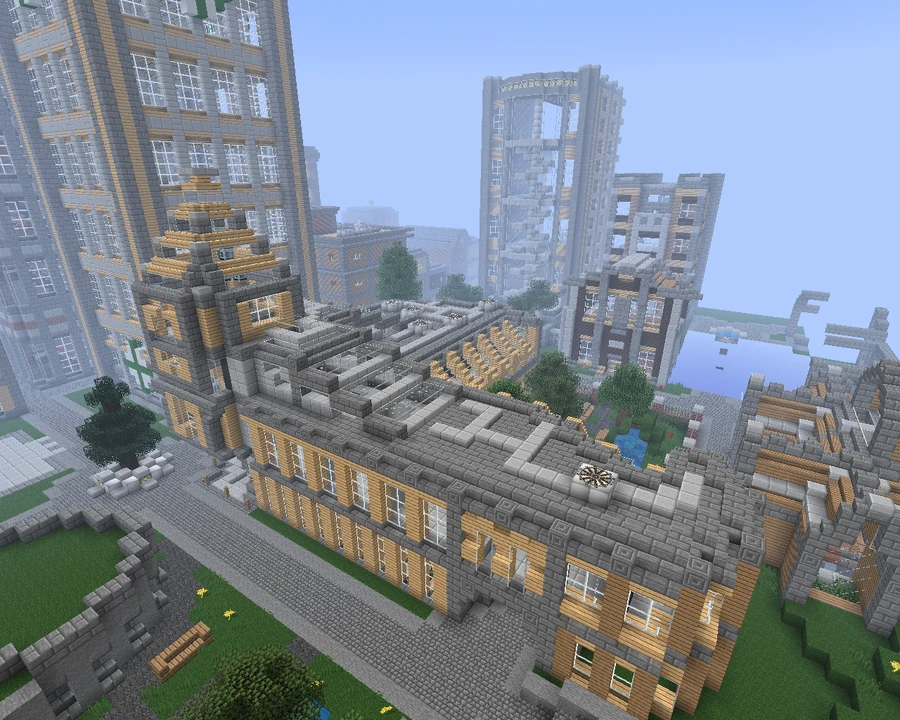

Broville Bureau of Science
A nonprofit organization sponsored by SOLAR and Compass to review patents and standards. Its building includes offices and laboratories available to the scientific community.
Patents and standards
Broville Bureau of Science, or B.B.S., is described as a nonprofit organization sponsored by Compass and SOLAR Corp. to review and approve new patents and standards.



Offices
The patent offices and the Bureau’s director are located above the public level. Anyone may visit the offices, but the humorous guidance recommends submitting patents through the “BBS BBS” to avoid having new ideas accidentally incinerated.
Sponsored laboratories
Below the public level is a series of small laboratories maintained by Compass R+D. They are free to use for anyone interested in scientific activity. The description notes that accidents happen and advises limiting work to less hazardous experiments.
See also
Sources and references
- v11.4.4 maps, signs, books and items World records
- Broville Bureau of Science · Broville Wiki Community archive
Text adapted and expanded from Broville Bureau of Science (contributors and history, revision 5003). Adapted text is available under CC BY-SA 3.0.